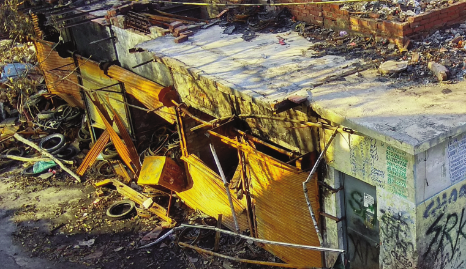

Documentation of public available evidence related Delhi riots 2020
View the Project on GitHub rainyalgorithm/delhi-riots-2020
Documentation of public available evidence related Delhi riots 2020.

See here
Delhi Riots Fact Finding by Delhi Minority Rights Commission
State of relief operation
Manufacturing Evidence by Polis Project
Press Council of India report on Media during Delhi Riots